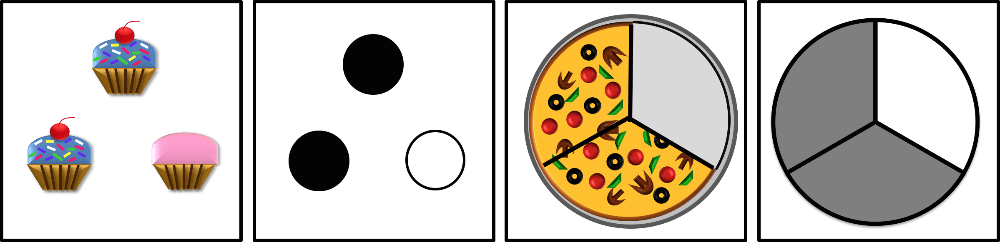

Information for School Administrators, Teachers, and Parents
Some of our research involves working with children in area schools.
We are studying how symbols and visual models of mathematical concepts affect students ability to learn, retain, and apply that knowledge to novel situations in the future.
Some of our prior research has been funded by the U.S. Department of Education.

Who we are
The Mathematical Cognition Lab at Wright State University is headed by Dr. Jennifer Kaminski.
Dr. Kaminski is an assistant professor in the Department of Mathematics and Statistics. She holds bachelors and masters degrees in mathematics and a doctoral degree in mathematics education focusing on cognitive psychology. Prior to coming to Wright State University, Dr. Kaminski was a research scientist at Ohio State University for seven years. During that time she conducted numerous studies on how students learn and use mathematics. Many students at Wright State are involved in the research projects.
What we do
We conduct research studies with children in grades K-12, as well as undergraduate students.
We study how people reason about mathematics and what types of learning material best promotes the acquisition of mathematical concepts. For example, which of the representations below is more effective when introducing young children to the concept of fractions?

In particular, what types of representations will:
- help students recognize learned concepts in different situations and
- allow them to build on their prior knowledge to acquire more complex concepts?
What we have discovered in our previous work is that some representations clearly help students apply their knowledge while others hinder application of knowledge.
Our current projects include the following:
- Elementary school students' acquisiton of fractions.
- Middle and high school students' acquisition of statistics and probability.
- Undergrduate students' mathematical reasoning.
Some of our studies examine how individual differences in students’ memory and attention affects learning and reasoning. In some studies, we use an eye-tracker to understand how students allocate their attention.
Participation
Participants in our studies are students in local schools who have agreed to partner with us on our research. Each individual student needs parental permission prior to participating.
In various studies, students will learn a new concept through a learning activity. These activities take place at the school. For some studies, the learning activities may take place on the Wright State University campus. One of our research associates will present the concept to the student either via computer or with physical material (for example physical manipulates or flash cards). The activities present information and also ask questions. All of the learning activities are designed ro be engaging. Most students find these activities to be fun!
Our Procedures
We try to make every effort to ensure that our procedures interfere as little as possible with regular school activities.
Once a school has agreed to work with us, we drop off brief descriptions of the study and permission slips. These papers are then distributed to parents by teachers. Parents who are willing to have their child participate in our learning activities sign the permission slip and return it to the school. One of our research associates will pick up the signed permission slips.
Before visiting a school, our research associates call individual teachers (whose students have agreed to participate) to schedule a time for the visit. We understand how busy teachers and students are. We are very flexible and always work around teachers’ schedules. When we have agreed upon a date and time, one or two research associates will come to the school and work with individual students or small groups for approximately 10 - 30 minutes. Students can participate in up to five activities during the school year. We bring along all necessary material which might be a laptop computer, paper, pencils, or manipulative material.
Please note that all of our procedures will be approved by the Institutional Review Board at Wright State University. Approval from the Institutional Review Board is a standard procedure for any research conducted through a university. This board ensures that all research practices respect the rights of participants. All information provided by parents and children is kept confidential, and schools can terminate their partnership at any time.
What do we do with our results?
During the activities we collect responses to questions from individual children. We then compile responses from all of our participants and analyze mean scores and responses of the group. To maintain confidentiality, student names are replaced with numeric codes, and individual students’ information and performance is never reported anywhere. These findings make positive contributions to the fields of education and child development through journal articles and national and international presentations. We also give summaries of the research to teachers at the end of the school year to distribute to students and parents. We encourage both teachers and parents to ask us any questions they may have.
Frequently asked questions
Q: What are some benefits for participating schools?
A: As partners of participating school districts, we would be happy to participate in professional development of teachers and possibly interact with parents. In the past, we have given talks on cognition and mathematics learning to practicing teachers. We can also provide interested high school students with research experiences. And, of course, we will share our results with teachers and parents!
Q: Can someone come to our school to describe participation procedures to our teachers? A: Yes. We would be happy to talk to teachers to explain participation in our study.
Q: What kinds of material or space are required when coming out to schools?
A: When a researcher visits a school, she will bring all needed materials, often including a laptop computer. For some studies, we may need a small table, two chairs and a plug for the laptop. A small room or quiet area is preferable, but we are also able to set up in the library or a hallway.
Q: Do the researchers who come to schools have background checks?
A: Yes, our researchers have current background checks and all necessary documentation to work with children in schools. They are also given training in conducting research with children.
Q: Will you have results for individual children?
A: Our results are compiled from the hundreds of children whom we test, so there are no specific results for each child. We are looking for general trends in children's thinking and learning patterns.
Does our work make a difference?
Yes, it does. Our work contributes to the fields of education and cognitive psychology--this is why we need your help. Previous findings from Dr. Kaminski’s work have been published in research journals and have been covered by many different news outlets including these:
Contact us
If you have any questions about our work, please contact us at the Mathematical Cognition Lab at Wright State University.
Mathematical Cognition LabWright State University
P: 937‐396‐5445 Email address: mathcognitionlab@gmail.com
Please visit our website: mathcog.org